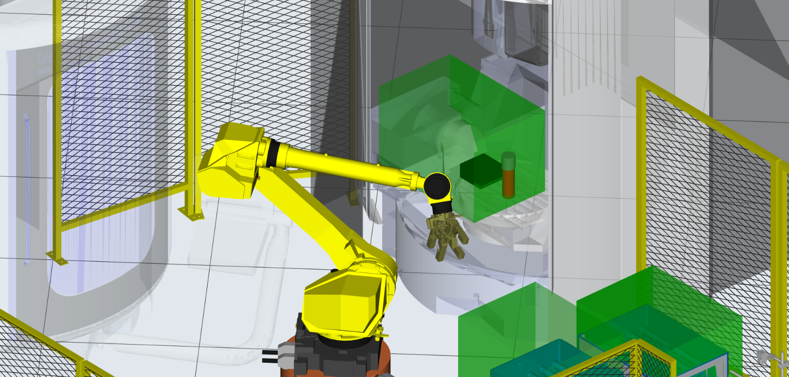

Designed and developed a complete robotic automation cell for the handling and machining of DMU components, from system architecture and virtual simulation to production-ready deployment. The project focused on building a reliable, fully automated manufacturing workflow integrating industrial robotics, PLC control, and automatic material logistics.
Developed the robot programs, automation sequences, and cell logic while validating robot motion, collision-free paths, and production cycles through virtual commissioning before deployment. The solution was designed to ensure safe operation, high repeatability, and optimized production throughput.
Integrated the robotic cell with the Cassioli Automatic Warehouse, enabling automatic material loading, unloading, and pallet management through synchronized communication between the warehouse, robot, PLC, and production equipment. This allowed fully automated part flow without manual intervention.
Performed system integration, testing, optimization, and commissioning to validate communication, robot trajectories, safety logic, and production performance, delivering a reliable manufacturing cell ready for industrial operation.